Target Excessive Hair & Achieve Smoother Skin with ABClinic Laser Hair Removal Treatment
Excessive and unwanted hair can be tiresome. While simpler methods such as shaving, plucking, and waxing are convenient and cost-effective, the results are often short-lived. Laser treatment can be an effective solution to address this issue.
What is Laser Hair Removal Treatment & How Does It Work?
Laser hair removal is a cosmetic procedure that uses concentrated beams of light (laser) to remove unwanted hair from specific areas of the body. It is an effective method for long-term hair reduction or removal in areas such as the legs, underarms, bikini line, face, and more.
At Dr Abby Clinic, we offer the solution to all your hair woes with our laser hair removal treatment, personalised according to your skin type, concerns, and preferences!
Discover Our Laser Hair Removal Solutions
Gentle Yag Laser
Innovative long-pulsed high-energy laser that targets hair follicles without affecting the surrounding skin. Reduces and eventually halts hair growth entirely with minimal discomfort and little to no downtime. See remarkable results in just one session!
Gentle Yag Laser hair removal technology uses a patented invisible beam of light and a constant source of heat to target the pigment (melanin) in the hair follicle, causing photothermolysis. The heat damages the hair follicle, disabling and then destroying it at its root while preserving the surrounding skin.
Your hair will fall out within the next few weeks. If you shave, you will not notice this phenomenon, but if you don’t shave, you will see the hair gradually thinning. Each time you undergo the laser treatment, approximately 20% of the hair will be destroyed.
- With each session, you should see significant changes in the amount of hair reduced in the treated area.
- Each hair goes through three stages of the growth cycle: anagen, catagen, and telogen.
- On a patch of skin, hairs are in different growth stages.
- The laser targets hair only in the growing phase (anagen stage), where approximately 20% of your hair is active. This is why several sessions of laser hair removal are necessary.
- Results may vary for individuals with hormonal imbalances.
- After treatment, your hair will grow but will naturally shed within 7 to 14 days.
- Before the hair sheds, you may shave if desired, but plucking is discouraged.
- Many of our customers become completely hair-free once they have completed the maximum number of sessions (which varies from person to person).
- Everyone is unique and will react differently to the laser.
- The Gentle YAG laser has been approved by the FDA for permanent hair reduction.
- This does not mean 100% hair removal, but rather that a significant percentage of treated hair (80-90%) will not grow back.
- Men and individuals with hormonal imbalances such as polycystic ovarian syndrome may require maintenance treatments in the future.
4 to 6 weeks (for face), 6-8 weeks (upper body/upper limbs ) and 8 to 12 weeks (lower body/lower limbs) between each session
- Fine facial hair should be treated more often than other areas.
- On average, individuals with mild to moderate hairiness require between 4 to 6 sessions of Gentle YAG to see results, which means about 80-90% hair reduction in the treated area.
- Very hairy women may need up to 7 to 8 sessions, while very hairy men, such as those with a dense beard, might require 8 to 12 sessions, depending on the case.
- The Gentle YAG laser is not effective for blonde or white hairs.
The FDA has approved Gentle Yag Laser hair removal as a safe procedure. To-date there have been no illnesses or diseases related to the laser.
Treatmentsfor laser hair removal
Gentle Yag Laser
The Gentle Yag Pro can be used to resolve unwanted hair in the following areas of the body: Face, Neck, Chest, Back, Bikini zone, Underarms, Arms, and Legs.
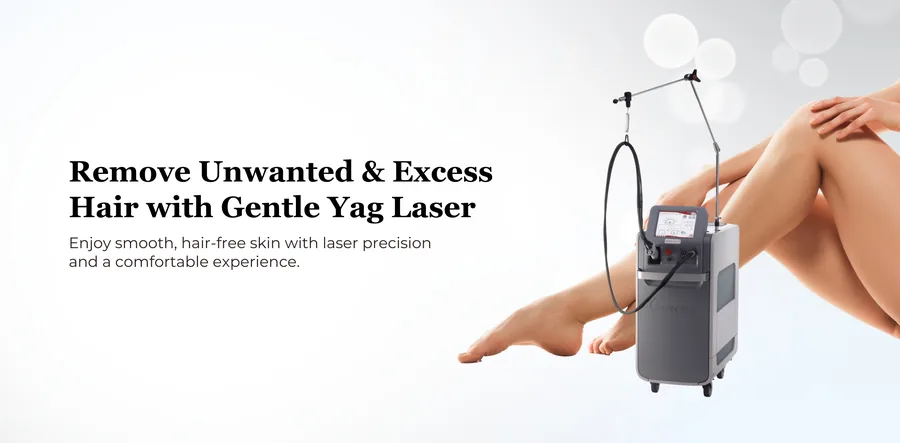
Laser Hair Removal with Gentle Yag Laser
The Gentle Yag can be used to resolve unwanted hair in the following areas of the body: Face, Neck, Chest, Back, Bikini zone, Underarms, Arms, and Legs.
What is Gentle Yag Laser and how does it work?
Give your razor, tweezers, or waxologist a break. Laser hair removal can permanently eliminate unwanted hair, unlike shaving and waxing, which both result in total regrowth.
The Gentle Yag Laser is the fastest and most powerful Nd:YAG laser on the market today. It effectively treats all skin types, including tanned skin, offering unmatched treatment capabilities in permanent hair reduction, wrinkles, and skin tightening.
The Gentle Yag Laser system delivers laser energy through a small device held by the practitioner. It functions by delivering a narrow, intense beam of light that is then absorbed by the skin and converted to heat which is absorbed by the cells in the specific targeted area of the face or body. The process involves focusing the laser upon a very limited area, and this direct beam does not affect the surrounding tissue – the perfect method for those who are interested in hair removal.
The Gentle Yag Laser can be used to resolve unwanted hair in the following areas of the body: Face, Neck, Chest, Back, Bikini zone, Underarms, Arms, and Legs.
Skin Concerns Treated
Unwanted hair on the face & body.
Spider veins.
Acne scars.

Age spot.
Tighten lax, loose skin.
Dynamic Cooling for Optimal Protection
Patented Epidermal Cooling – The Gentle Yag Laser Dynamic Cooling Device represents an adjustable epidermal protection technology to maximise patient safety and comfort. It has a special contact cooling handpiece that helps cool down the surrounding skin as it directs laser energy to the hair follicle.
Hardly any downtime with Gentle Yag Laser!
The appearance of the skin after Gentle Yag Laser varies from patient to patient, depending on their skin type and area treated. The laser treatment feels like a hot pinch, or similar to a rubber band snapping against the skin. To prepare for the treatment, a specific anesthetic cream is applied to the area 30 minutes before the Gentle Yag Laser treatment.
Most patients have redness and some swelling of the treated area with mild discomfort similar in sensation to a mild sunburn. This may last from an hour to a day. Hair from the treated area may be shed. Mild crusting may occur, but if the patient experiences extensive crusting or blister formation they should contact their physician. Most patients can return to their usual activities right away.
Click here to download the product brochure
Advantages of Gentle Yag Laser
- No pain, no downtime.
- Visible improvement.
- Safe on all skin types.
- Effective on Asian and African American skin.
- FDA approved to treat all skin types including darker-skinned patients.
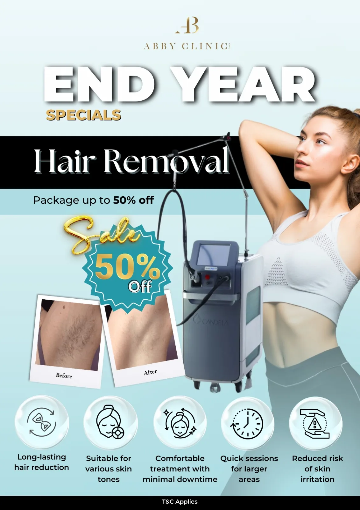
Before and After Gentle Yag Laser Treatment
Take a look at some of the before-after photos.
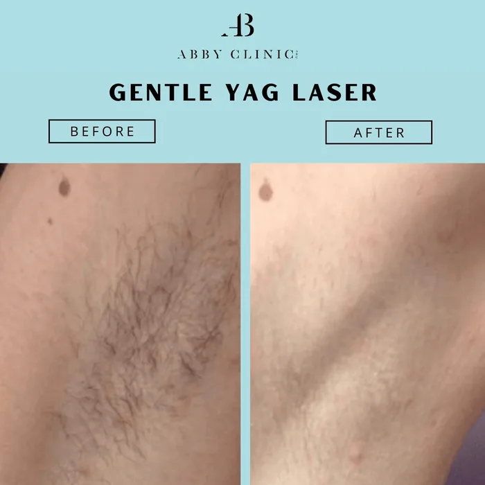
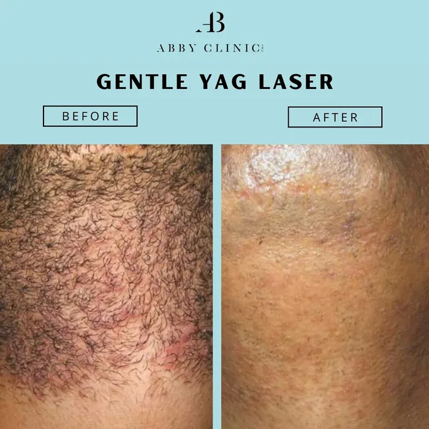
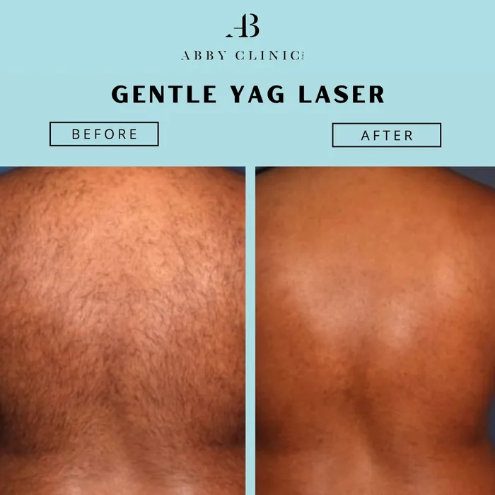
Fotona Nd Laser Hair Removal by Dr Abby @ AB Clinic Solaris.
Advanced Laser Technology for Long-Lasting Hair Reduction – Smoother Skin. Less Hair. Longer-Lasting Results.
Fotona Nd Laser Hair Removal by Dr Abby @ AB Clinic Solaris.
Say goodbye to the endless routine of shaving, waxing and plucking. Experience a more advanced approach to unwanted hair reduction with Fotona Nd Laser Hair Removal at ABClinic.
Powered by advanced 1064nm Nd laser technology, Fotona is designed to target unwanted hair follicles effectively while minimising unnecessary damage to surrounding skin.
Whether you’re struggling with unwanted facial hair, underarm hair, or body hair, Fotona offers a personalised, results-focused approach towards smoother, more confident skin.
Why Choose AB Clinic?
50% OFF Laser Hair Removal Packages
FREE Doctor Consultation Before Confirming
Buy 6 Sessions, Get 1 Free
No Hidden Cost
Doctor Only Suggests What You Need To
What Is Fotona Nd Laser Hair Removal & How Does It Work?
Fotona Nd Laser Hair Removal is an advanced, non-invasive laser treatment designed to achieve long-term reduction of unwanted facial and body hair.
Unlike shaving or waxing, which only provide temporary hair removal, Fotona uses 1064nm Nd laser energy to target hair follicles beneath the skin’s surface.
The laser delivers controlled energy into the treatment area, where heat is transferred to the hair follicle to disrupt its ability to produce new hair.
With a series of treatments, patients may experience progressively reduced hair growth, finer regrowth and smoother-looking skin.
Fotona’s advanced pulse-control technology allows treatment settings to be customised according to individual skin types, hair characteristics and treatment areas.
Why Choose Fotona Laser Hair Removal?
- Long-Lasting Hair Reduction: Designed to progressively reduce unwanted hair growth over multiple sessions.
- Premium Laser Technology: Advanced Fotona Nd technology delivers precise and controlled laser energy.
- Suitable for Different Skin Tones: The 1064nm wavelength is particularly useful for treating a wide range of skin types, including darker skin tones, following professional assessment.
- Results-Focused Treatment: A personalised treatment approach tailored to your hair growth and skin condition.
- Minimal Downtime: Most patients can resume normal daily activities shortly after treatment.
- Reduced Shaving & Waxing: Less frequent hair removal maintenance as treatment progresses.
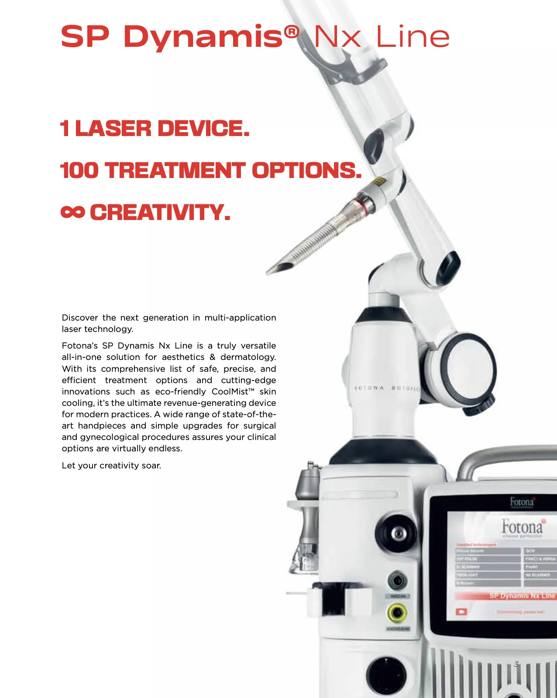
Hair Removal Treatment Areas
- Face & Upper Lip – Reduce unwanted facial hair for a smoother appearance.
- Underarms – Enjoy smoother underarms with less frequent shaving.
- Arms & Legs – Reduce unwanted body hair for smoother-looking skin.
- Bikini Line – A personalised approach to reducing unwanted hair in sensitive areas.
- Chest & Back – Target unwanted hair across larger body areas.
- Neck & Other Areas – Customised treatment options based on individual suitability.
Fotona Laser Hair Removal is designed to achieve long-term hair reduction rather than guarantee complete permanent removal of every hair follicle. Many patients experience significantly reduced hair growth, with regrowth often appearing finer or less noticeable. Maintenance sessions may be necessary.
The 1064nm Nd wavelength is commonly used for a wide range of skin types, including Asian and darker skin tones. However, individual suitability should always be assessed by a qualified medical professional.
Patients may experience a warm, tingling or snapping sensation during treatment. Discomfort varies depending on the treatment area and individual sensitivity. Your practitioner will take appropriate measures to manage comfort.
Hair reduction occurs gradually over multiple treatment sessions. Some treated hairs may shed within the weeks following treatment, while visible improvement depends on hair growth cycles and individual response.
Fotona Nd laser technology may be suitable for certain sensitive areas, including the underarms and bikini line. Our doctor will assess your skin condition and determine the appropriate treatment approach.
Fotona offers advanced medical laser technology with precise pulse control and a personalised treatment approach. When choosing a laser hair removal treatment, it is important to consider the technology, practitioner experience, suitability assessment and expected long-term results rather than price alone.
No. ABClinic offers a free doctor consultation before package purchase, allowing you to understand your treatment options and suitability before committing.
Before and After Gentle Yag Laser Treatment
Take a look at some of the before-after photos.
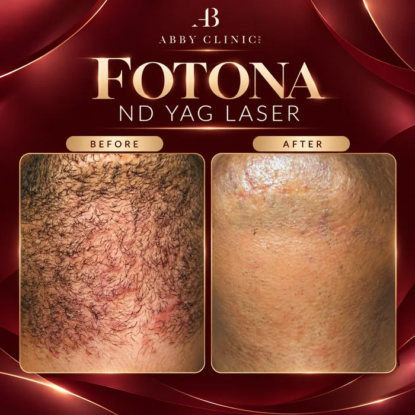
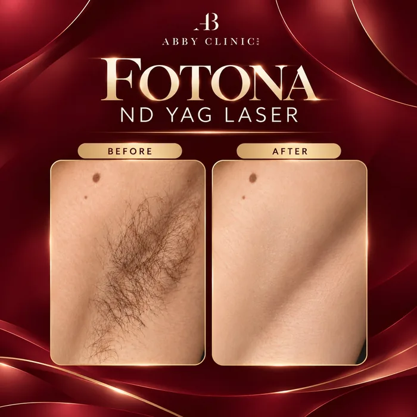
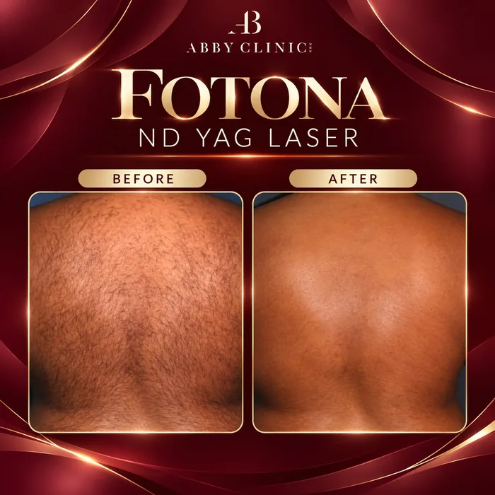
Laser Hair Removal That Work For Your Skin
Our clients have reported clear, smooth skin after undergoing laser Hair Removal at Dr Abby Clinic. Take a look at some of the before-after photos.
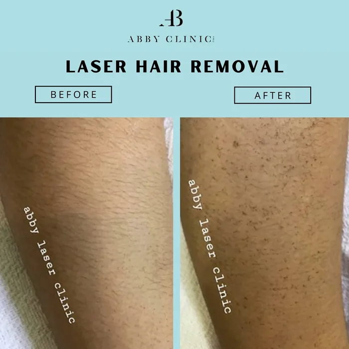
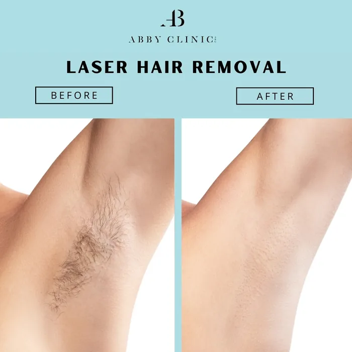
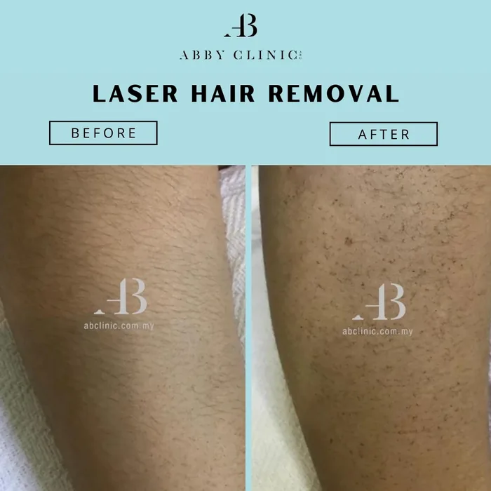
Why ChooseDr Abby Clinic
Treatments are performed by LCP certified doctor and accredited therapists
Using FDA approved treatments
Transparent price and rate with no hidden or additional cost
Focusing on results and customer satisfaction
Featured Awards & Achievements
 Top 21 Best Aesthetic Clinics in Malaysia
Top 21 Best Aesthetic Clinics in Malaysia Harpers Bazaar Aesthetics Award 2019 & 20213
Harpers Bazaar Aesthetics Award 2019 & 20213 Top 20 Best Aesthetic Clinics in Klang Valley
Top 20 Best Aesthetic Clinics in Klang Valley Top 20 Best Aesthetic Clinics in Malaysia
Top 20 Best Aesthetic Clinics in Malaysia Top 10 Laser Hair Removal Clinic KL
Top 10 Laser Hair Removal Clinic KLRelated
articles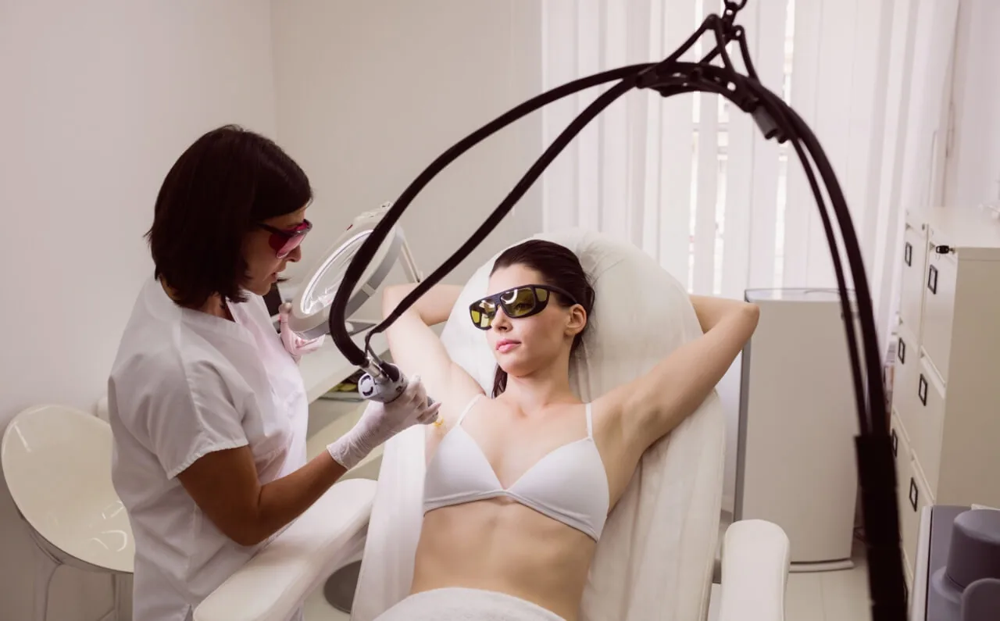
Bid Farewell to Unwanted Hair: A Deep Dive into Laser Hair Removal Treatment
25 April 2024
For many, the presence of unwanted hair can be a source of discomfort, embarrassment, and inconvenience.
Laser Hair Removal: The Ultimate Guide to Getting Smooth Skin
25 September 2023
You’ve come to the right place if you’ve been thinking about having laser hair removal.
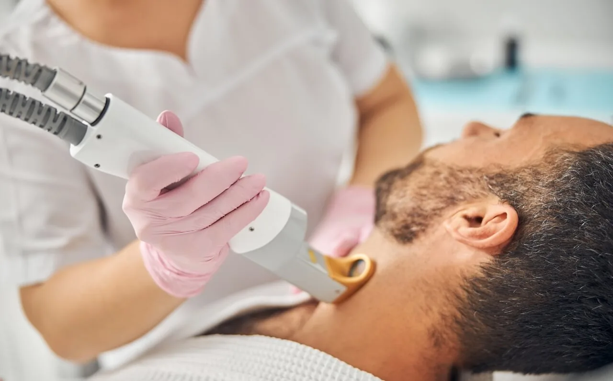
Unveiling the Smooth Truth: Laser Hair Removal Myth Debunked!
23 August 2023
In an era where self-expression and confidence take center stage, the quest for smooth, hair-free skin has led us to the exciting frontier of laser hair removal.
5 Reasons Why We Believe That Laser Hair Removal Is Always The Best Choice
22 May 2023
Laser hair removal treatment is a popular choice for many to get rid of any stubborn hair on their body.
Experience Your Personalised Treatment Today
Great skin doesn’t happen by chance, it happens by appointment.
Book your slot now and let’s make it happen.